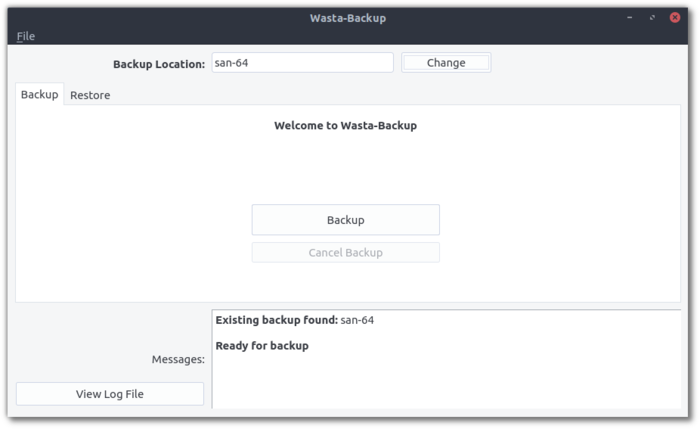

Wasta-Backup: Simple Version-Backup Program
What is it?
Wasta-Backup is a simple Linux backup program for version-backups of data to an external USB device. In other words, it is an easy way to back up important files, and it keeps older versions of the files in case they are needed again.
If you want to know more, Wasta-Backup is a simple graphical interface for rdiff-backup, which is a solid, reputable, and reliable command-line-only backup program.
How does it work?
Here is a screenshot of Wasta-Backup:

If you insert a USB device and start Wasta-Backup, the device will automatically be found and you just need to click Backup to begin.
When a USB device with a wasta-backup folder on it (presumably from a previous backup) is inserted, Wasta-Backup will auto-launch.
What gets backed up, exactly?
Here is a list of the default folders that are backed up with Wasta-Backup (within a user’s home folder):
- Adapt It (~/Adapt It Unicode Work)
- Bloom (~/Bloom)
- Fieldworks (~/.local/share/fieldworks/Projects)
- Paratext (~/ParatextProjects)
- Paratext8 (~/Paratext8Projects)
- Thunderbird (~/.thunderbird)
- WeSay (~/WeSay)
- User Documents (~/Documents)
- User Desktop Files (~/Desktop)
By default, Wasta-Backup will only backup important files within the Documents and Desktop folders (files with other extensions like movies and pictures will not be backed up). This is done to make sure the USB backup device is not filled up too quickly. To back up all files within those folders, you can use the Wasta-Backup menu to uncheck File > Advanced > Backup File Selection > Only Backup Important Files
What if I want to customize what gets backed up?
Wasta-Backup can be customized to meet almost anyone’s backup needs.
To Customize Backup Folders: The list of folders that get backed up can be customized by editing this file in a user’s home folder:
~/.config/wasta-backup/backupDirs.txtTo Customize Backup File Types: The list of default file types that get backed up can be customized by editing this file in a user’s home folder:
~/.config/wasta-backup/backupInclude.txt
What can I restore?
Wasta-Backup can restore:
- A previous version of a file or folder (the current item is first renamed using the current date and time)
- A deleted file or folder
- All current files and folders (such as when you are moving files from an old computer to a new computer)
How do I install Wasta-Backup?
Wasta-Backup is pre-installed in Wasta-Linux. For other Ubuntu-based Linux distributions (Ubuntu, Linux Mint, etc), the easiest way to install Wasta-Backup is to use a Terminal *. Copy each of these three commands and enter them in the Terminal (one at a time; you will need to provide an administrative password):
sudo add-apt-repository ppa:wasta-linux/wasta-apps
sudo apt-get update
sudo apt-get install wasta-backup
* To open the Terminal, in Wasta-Linux go to Menu > Administration > Terminal, or press the following keys at the same time: Ctrl + Alt + T